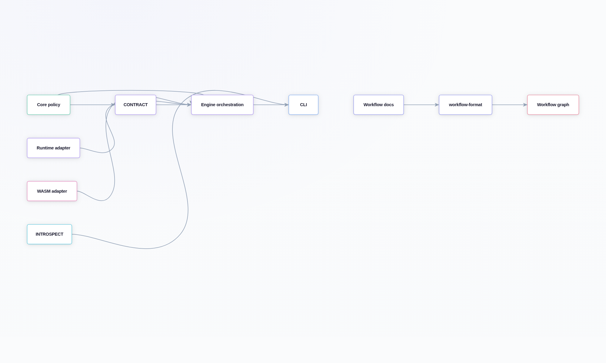
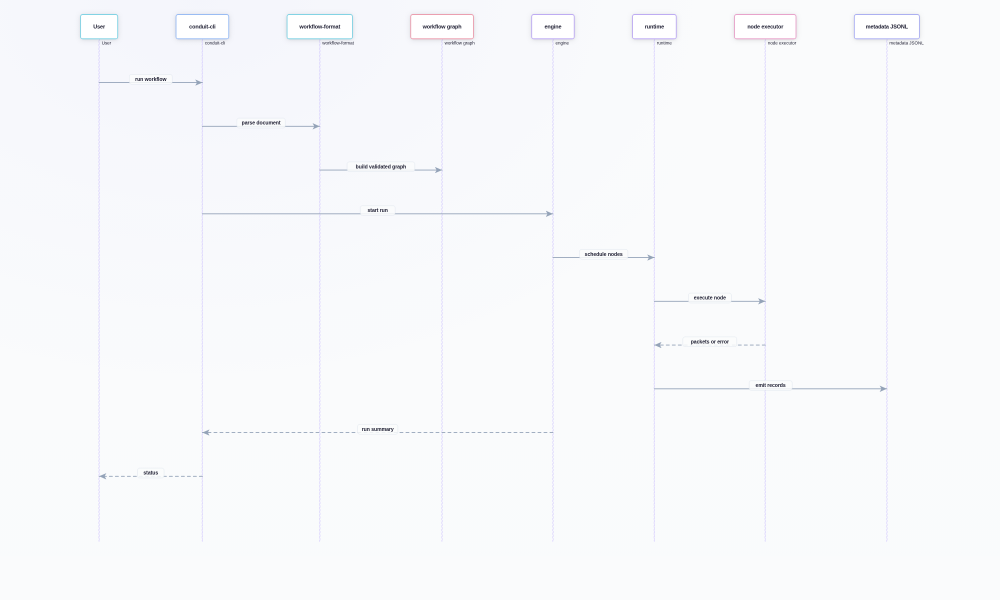

2 System Overview
2.1 Pureflow Overview
Pureflow is an experimental Flow-Based Programming engine in Rust. It validates workflow documents, executes node graphs through bounded channels, and emits machine-facing metadata and run summaries.
The system is built to keep three things visible at once: what the workflow looks like, how the run is executing, and where the boundaries of responsibility actually sit. That is what makes the rest of the guide worth reading slowly.
If you want a mental model, think of Pureflow like a shipping hub:
- the workflow document is the route map,
- nodes are processing stations,
- edges are conveyor belts with finite space,
- metadata is the camera footage and scanner log.
At a high level, Pureflow separates:
- static graph and format validation,
- runtime execution and orchestration,
- contract/capability policy,
- introspection and CLI surfaces.
If you only remember one thing from this chapter, remember that those concerns are intentionally not mixed together. Most of the design choices in the rest of the guide are there to protect that separation.
2.2 Original FBP Roots
Pureflow is based on J. Paul Morrison’s original Flow-Based Programming model. That model matters here because it gives the architecture a very practical shape:
- components behave like long-lived processes instead of one-shot functions,
- data moves over bounded channels instead of through hidden shared state,
- execution is streaming and demand-driven instead of batch-only,
- backpressure becomes visible when downstream work cannot keep up,
- the graph stays loosely coupled because each node only knows its ports.
That fit is deliberate because it keeps the system honest. You can see where data is waiting, where work is blocked, and where a contract mismatch is really a wiring problem rather than a mysterious runtime bug.
If you are coming from a more traditional scheduler or queue-heavy design, this is the part to notice: FBP is not trying to hide the graph. It is trying to make the graph the thing you reason about.
2.3 Key Terms
The guide uses a few runtime terms in a precise way:
- bounded channels: the edges between nodes have fixed capacity, so sends can block or fail instead of growing without limit.
- backpressure: the signal that an upstream node is producing faster than the downstream side can consume.
- node: one unit of work in the workflow graph.
- port: a named input or output on a node.
- packet: one item of data moving across a port.
- metadata: machine-readable records that describe what happened during a run.
- capability: a declared permission or restriction on what a node may do.
- contract: the expected shape and behavior of a node at the workflow boundary.
You do not need to memorize the glossary on first read. The point is to keep the language stable enough that a junior engineer can read one chapter and the next without translating the vocabulary in their head.
2.4 Why This Architecture Matters
The architecture is built to make the important things visible instead of leaving them implicit.
- Workflow shape is validated before execution, so a bad document fails early and clearly.
- Bounded channels make pressure a first-class event instead of a hidden scheduler accident.
- Runtime metadata records what happened while the run is still live, which makes debugging and replay easier than reconstructing a story from logs after the fact.
- Capability and contract checks keep the node boundary honest, which matters more as execution modes get more diverse.
- The same design gives Pureflow room to run native nodes, WASM nodes, and future adapters without rewriting the whole graph model.
That combination is what makes the system interesting: it behaves like a serious execution engine, but it still tries to keep the logic comprehensible to a person reading the code for the first time.
Pureflow is trying to be the kind of system you can debug by reading from top to bottom, not the kind you need to reverse-engineer from a pile of moving parts.
2.5 Layered Architecture
The figure below shows the major crates and handoffs.

2.6 Crate Responsibilities
2.7 Runtime Data Flow
Another way to read this: CLI is the dispatcher, engine is the floor manager, runtime is the shift supervisor, and each node is a station doing one job.
This picture matters because it matches how the code is split. The CLI handles entry and exit, the engine decides what should happen, the runtime makes the work actually run, and the nodes stay focused on their own logic.

2.8 Why WASM Helps Here
WASM is useful in Pureflow because it gives you a narrow, portable execution boundary without asking the rest of the system to trust a whole host runtime.
The value here is not just “WASM is safer.” It is that WASM gives Pureflow a second implementation path without letting that path leak into the core model.
- A WASM node is easier to ship and inspect than a native plugin with deep host reach.
- The host owns the channels, so the graph still looks like Pureflow even when a node is compiled to a different execution target.
- The capability boundary stays explicit. If a guest cannot reach the network or filesystem, that limitation is visible in the adapter instead of hidden in the node implementation.
- The batch-style component model keeps the WASM story focused on data in, data out, which is a good fit for flow graphs.
This means WASM is not just a deployment trick. It is a way to make extension safer, more portable, and easier to reason about when the engine starts to grow.
That makes it a good fit for a system that wants strong boundaries and a clear story for how untrusted or semi-trusted code fits into the graph.
2.9 Why asupersync Instead of Tokio
Tokio is a strong general-purpose async ecosystem, but Pureflow does not need a general-purpose app runtime to explain its own model. It needs a substrate that stays out of the way while still giving the engine task-tree execution, cancellation, and bounded channel behavior.
The goal is to keep the runtime layer boring in the right way: it should execute Pureflow’s model, not define a second one.
That is why asupersync sits underneath pureflow-runtime rather than being the public model itself.
- Pureflow owns the graph, ports, contracts, metadata, and capability story.
asupersyncprovides the execution machinery that makes those ideas run.- The boundary stays narrow, which makes it easier to test and easier to replace later if the project ever needs to.
- The public API does not inherit Tokio’s larger vocabulary when Pureflow only needs a smaller one for workflow execution.
There is nothing wrong with Tokio in general. The point is simply that Pureflow is trying to teach and preserve its own runtime story, not inherit a broader framework story it does not need.
That makes the boundary easier to test, easier to describe, and easier to swap later if the project ever needs to.
2.10 Metadata Surfaces and Usage
Pureflow emits two machine-facing outputs:
- metadata JSONL stream (event records),
pureflow run --jsonterminal summary.
The short version: JSONL is the play-by-play, while the summary JSON is the box score at the end of the game.
The two outputs serve different readers. One is for tracing the run while it is happening. The other is for the final yes/no decision when the run is over.
2.10.1 Metadata JSONL record families
Use the first table when you are following the shape of a normal run. It is the timeline view.
Use the second table when you are looking for what went wrong, or what side effects were intentionally observed.
2.10.2 Run summary JSON fields
2.11 Important Examples
2.11.1 CLI usage
# Validate workflow structure and format
cargo run -p pureflow-cli -- validate examples/native-linear-etl.workflow.json
# Inspect topology/contracts/capabilities
cargo run -p pureflow-cli -- inspect examples/native-linear-etl.workflow.json
# Run and emit machine-facing summary
cargo run -p pureflow-cli -- run --json \
examples/native-linear-etl.workflow.json \
/tmp/pureflow-native-linear.metadata.jsonl2.11.2 Workflow document shape
{
"pureflow_version": "1",
"id": "native-linear-etl",
"nodes": [
{ "id": "source", "inputs": [], "outputs": ["rows"] },
{ "id": "transform", "inputs": ["rows"], "outputs": ["cleaned"] },
{ "id": "sink", "inputs": ["cleaned"], "outputs": [] }
],
"edges": [
{
"source": { "node": "source", "port": "rows" },
"target": { "node": "transform", "port": "rows" },
"capacity": 2
}
]
}2.11.3 Contract/capability alignment example (Rust)
use pureflow_contract::{
Determinism, ExecutionMode, NodeContract, PortContract, SchemaRef,
validate_workflow_contracts,
};
use pureflow_core::{
RetryDisposition,
capability::{NodeCapabilities, PortCapability, PortCapabilityDirection},
};
// Build contracts and capabilities for each workflow node, then validate:
validate_workflow_contracts(&workflow, &contracts, &capabilities)?;This is a key authoring boundary for both humans and future LLM assistants: workflow topology, contracts, and capabilities must match before execution. If those three disagree, Pureflow treats it like a wiring mismatch and stops before runtime surprises can happen.
That rule is part of the architecture’s value. It catches structural mistakes before they turn into runtime folklore.
2.12 Boundary Decisions
These are the boundaries worth remembering while reading the code:
If you are skimming the code, this table is the chapter’s spine. Anything that crosses one of these lines should be obvious in the types or the module name.
2.13 Open Questions
These are the points where code and docs suggest open questions or evolving policy. I recommend focused follow-up review on each.
They are not red flags so much as reminders that the design is still learning where its hard edges need to be.
Think of this as a short list of design work, not a list of defects.
2.14 Chapter Takeaways
Pureflow works best when the workflow document, runtime behavior, and capability policy remain separate things that meet at the boundary instead of collapsing into one blurry execution blob.
That is the recurring theme in this chapter. Bounded channels, explicit contracts, and narrow adapters all serve the same goal: keep the graph legible enough that a human can reason about it without carrying the whole system in their head at once.
If the architecture continues to feel coherent as the code grows, it is because those boundaries are still doing their job.